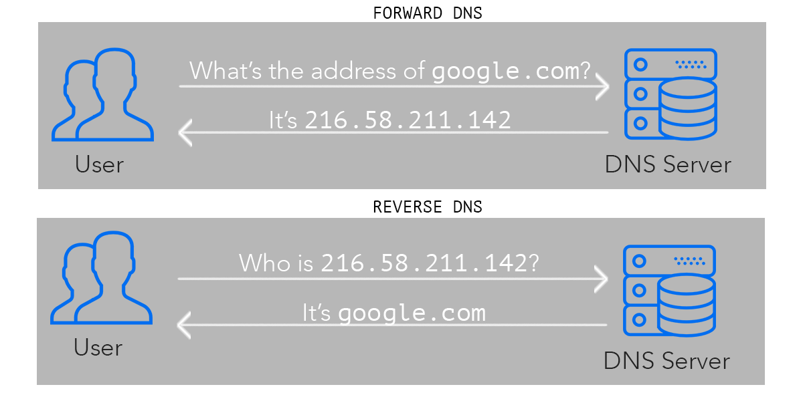

Internet Protocols & DNS
How does network communicate with each other?
Long before in the 1970s there was no standard methods for networks to communicate. Then came the two heros Vint Cerf and Bob Kahn who developed something called the internet protocol. which made the communication possible.
How does the Internet Work?
The Internet works through a packet routing network in accordance with the Internet Protocol (IP), the Transport Control Protocol (TCP) and other protocols.
What’s a protocol?
A protocol is a set of rules specifying how computers should communicate with each other over a network. For example, the Transport Control Protocol has a rule that if one computer sends data to another computer, the destination computer should let the source computer know if any data was missing so the source computer can re-send it. Or the Internet Protocol which specifies how computers should route information to other computers by attaching addresses onto the data it sends.
Internet Protocol
When we have to communicate over the internet , each devices as its on address called the IP address.When the message is sent the IP address of destination is clipped along with the address of source to get the information required. Like all house address , IP address is the same for a computer. IP address is usually written in 32 bits. Example of IP address: 123.554.76.810
The above IP address is called the IPv4 ,which was developed in the 1973. Now we have IPv6 which provides more than billions of address which enough for everyone. 123----->Country 554----->Region 76------>Subnet 810------>Device What do these Internet addresses look like?
These addresses are called IP addresses and there are two standards.
The first address standard is called IPv4 and it looks like
212.78.1.25. But because IPv4 supports only 2³² (about 4 billion) possible addresses, the Internet Task Force proposed a new address standard called IPv6, which look like3ffe:1893:3452:4:345:f345:f345:42fc. IPv6 supports 2¹²⁸ possible addresses, allowing for much more networked devices, which will be plenty more than the as of 2017 current 8+ billion networked devices on the Internet.As such, there is a one-to-one mapping between IPv4 and IPv6 addresses. Note the switch from IPv4 to IPv6 is still in progress and will take a long time. As of 2014, Google revealed their IPv6 traffic was only at 3%.
How can there be over 8 billion networked devices on the Internet if there are only about 4 billion IPv4 addresses?
It’s because there are public and private IP addresses. Multiple devices on a local network connected to the Internet will share the same public IP address. Within the local network, these devices are differentiated from each other by private IP addresses, typically of the form
192.168.xxor172.16.x.xor10.x.x.xwherexis a number between 1 and 255. These private IP addresses are assigned by Dynamic Host Configuration Protocol (DHCP).For example, if a laptop and a smart phone on the same local network both make a request to
www.google.com, before the packets leave the modem, it modifies the packet headers and assigns one of its ports to that packet. When the google server responds to the requests, it sends data back to the modem at this specific port, so the modem will know whether to route the packets to the laptop or the smart phone.In this sense, IP addresses aren’t specific to a computer, but more the connection which the computer connects to the Internet with. The address that is unique to your computer is the MAC address, which never changes throughout the life of the computer.
This protocol of mapping private IP addresses to public IP addresses is called the Network Address Translation (NAT) protocol. It’s what makes it possible to support 8+ billion networked devices with only 4 billion possible IPv4 addresses.
How do networked computers figure out ip addresses based on domain names?
We call looking up the IP address of a human-readable domain name like
www.google.com“resolving the IP address”. Computers resolve IP addresses through the Domain Name System (DNS), a decentralized database of mappings from domain names to IP addresses.To resolve an IP address, the computer first checks its local DNS cache, which stores the IP address of web sites it has visited recently. If it can’t find the IP address there or that IP address record has expired, it queries the ISP’s DNS servers which are dedicated to resolving IP addresses. If the ISP’s DNS servers can’t find resolve the IP address, they query the root name servers, which can resolve every domain name for a given top-level domain . Top-level domains are the words to the right of the right-most period in a domain name.
.com.net.orgare some examples of top-level domains.DNS spoofing
DNS spoofing, also referred to as DNS cache poisoning, is a form of computer security hacking in which corrupt Domain Name System data is introduced into the DNS resolver's cache, causing the name server to return an incorrect result record, e.g. an IP address.
How is DNS spoofing done?
DNS spoofing is done by replacing the IP addresses stored in the DNS server with the ones under control of the attacker. Once it is done, whenever users try to go to a particular website, they get directed to the false websites placed by the attacker in the spoofed DNS server.